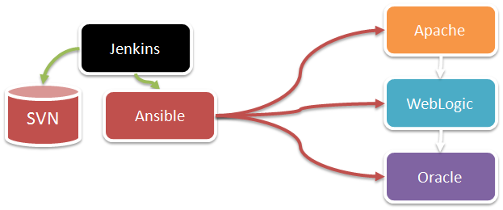

A propos de l'auteur
- Administrateur système et Java
- Architecte applicatif/système
- Outils d’industrialisation :
- Template Wiki
- Scripts over SSH
- Maintenance usine à gaz over SSH
- Puppet et Ansible il y a quelques temps
A propos de notre application
- Serveur d'application Java - 3 tiers
- Répartition de charge et éléments statiques sur Apache
- Présentation à base de JSP
- Couche métier
- Stockage base Oracle
- Serveur de base de données Oracle
- Apache
- Divers (Streamserve, Batchs Java)
Méthodologie de déploiement
Globalement à la main ...
- Scripts d'installation :
- Domaine WebLogic
- Serveur Oracle
- Serveur Apache
- Document d'installation :
- Par composant (Apache, WebLogic, etc.)
- Description enchaînement des installations (Oracle puis WebLogic puis Apache)
- Configuration du logiciel (Ajout de certificat, modification utilisateur etc.)
Globalement ...
- Scripts différents d'un socle à un autre
- Beaucoup de copier-coller
- Pas de réentrance
- Et je ne parle pas du reste
La reprise de tout ceci
- La partie simple : passer sous SVN
- La partie un peu moins simple : l'industrialisation
- Dans un premier temps sous Puppet
- Suite à une présentation interne, étude Ansible vs Puppet
Un mot sur Puppet
- POC il y a quelques années pour un gros client
- Pros
- Très rapide !
- Magique ! (quand c'est au point ...)
- A la limite du rêve éveillé par rapport à l'existant
L'effet Puppet ...

Par contre
- Installation de l'infra Puppet :
- puppet master/server
- puppet dashboard
- puppet DB
- Postgres
- Déploiement des agents
- Des descriptions mais pas d'enchaînement
- Déploiement à la demande :
- Serveur Middleware
- L'agent mco sur les serveurs
- de l'authentification Middleware de messagerie
- Et pour conclure, l'horreur des certificats à gérer.
Petite étude Ansible vs Puppet
- Avantages de Puppet :
- Couverture très grande
- Langage super intéressant (descriptif)
- Exécution très rapide
- Avantages d'Ansible :
- Langage moins expressif mais beaucoup plus simple !
- Pas d'agent, pas d'infra
- Notion d'enchaînement très naturelle
- Sert pour n'importe quel type d'opération
Ansible vs Puppet, pour résumer :
- Puppet a comme point fort :
- La gestion de l'infra/socle
- Il reste plus rapide
- Ansible pour ça part :
- Beaucoup plus simple à déployer
- Notion d'enchaînement !
- Utilisable pour n'importe quoi :
- Déploiement d'applications
- Gestes d'exploitation
Utilisation de Jenkins
- Planification de job
- Opération sur les bases de données
- Calcul de stats Oracle
- Construction des packages
- Préparation livraisons
- Lancement intéractif
- Limite les bétises
- Permet de contrôler les accès
- Garde une trace des opérations
SVN pour garder une trace des changements
- Jenkins récupére automatiquement le contenu du SVN
- Ansible est ensuite lancé avec cette copie
Architecture logiciel

Travaux en cours
- Utilisé pour nos déploiements chez un client
- Formation en cours d'une équipe en charge installation
- Gestes d'exploitation BDD
- MAJ plateforme Java
- Déploiement application
- Surveillance technique/applicative avec Naemon
- Mail de mise à disponibilité
- Tests fonctionnels
En attente d'Ansible v2
- Quelques bugs qui trainent
- Ajout des blocks try/catch